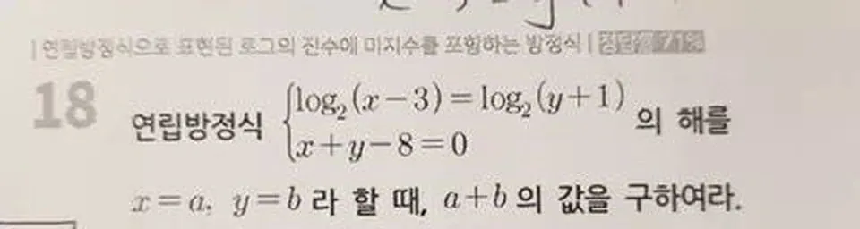

로그만 보고 바로 포기한 29% ㅋㅋ

로그만 보고 바로 포기한 29% ㅋㅋ
로그는 왜 있는 거임?
훼이크!
난따로구한다.. 난바보다
답을 알려줘도 출제자의 함정이다 싶어서 더 읽겠는데ㅋㅋㅋ
빵점방지문제네
빵점나왔다고 자살하지말라고
???: 아 역시 알고 계셨군요. 모르는 사람은 무한급수로 풀려고 오래걸리거든요
파리야 나느라 고생했다
ㅋㅋㅋㅋㅋㅋㅋ?
첫 식에서 x, y 다 구했는데 둘째 식에 답 있음. ㅆㅂ 설마 수능문제임?
방금 제미나이 물어봤는데 얘도 로그 푸네 ㅋㅋ
뭐냐 이건 ㅋㅋㅋㅋㅋㅋ
대체 어쩌다 71프로
x+y=8이내 생각 해놓고 위에 로그 풀려다가
뭔가 이상해서 문제 다시보니 8이 정답임 ㅋㅋ
뭐야이게 ㅋㅋㅋㅋ
걍 기운내라고 넣은거인듯
앗 ㅋㅋㅋㅋㅋㅋ
thj8
엥? ㅋㅋㅋㅋㅋㅋㅋㅋㅋ
????
ㅋㅋㅋㅋㅋㅋㅋ 어이가 없네 ㅋㅋㅋㅋㅋㅋ
위쪽만 보고 x+y-8 = 0 ?? 왜 굳이 x+y=8 이라고 안적고? 했는데
아래보니 이게 문제였구나 ㅋㅋㅋ